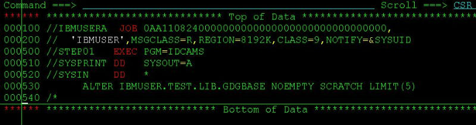
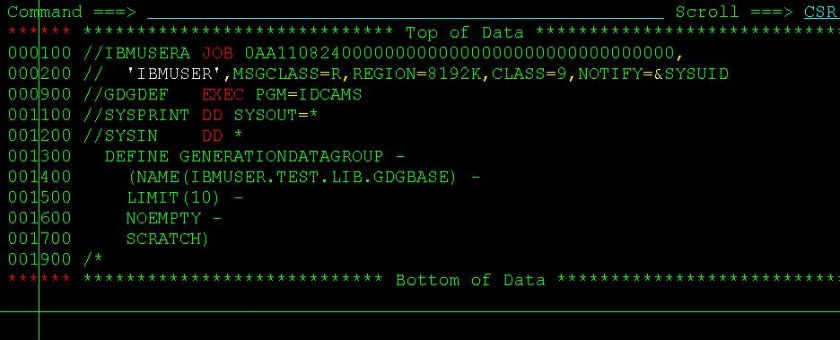

百度统计少于32个页面报错
今天试了下百度统计里面的"SEO建议"功能，居然神奇般的可以使用了。

还记得前些日子安装了百度统计代码，正想试试最新的“SEO建议”功能的时候，总是出现错误：“可供检查的页面数量过少，建议您至少在检查范围内的32个页面安装百度统计代码”错误.
现在分析来可能有几种原因：
<1>. 网站刚安装百度统计代码，比如安装不到一两天时间。我基本在上个月刚开博的时候就安装了，到前几天还是不能使用“SEO建议”功能，所以个人觉得不是这个原因。
<2>. 网站本身页面不足。单说静态页面的话，一篇文章就一个页面了，那我的起码也有60个左右了吧。要是不说静态页面的话，那wordpress本身就只有一个页面了，更不可能。所以应该也不是页面不足的原因。
<3>. 网站访问量低，PV低。 我估计这个有些可能，因为上个月到前几天为止，基本没什么人访问的。
<4>. 百度收录页面少于32个。这个我是最认为有可能的，因为我的博文这几天才被百度正常收录的，所以这个可能性大一点。
总结：结合第3、4点，用一句话归纳就是——“内容为王”。百度不是傻子，你网站不是垃圾站，有内容了，百度自然就收录了 ...
comments
Read More
IBM File Manager for z/os
IBM的File Manger 在大机平台上是非常强大的文件查看/编辑器，是一个强大的ISPF应用程序。这里先贴上一张IBM2011年最新的关于File Manger的结构图，我认为这张图很好地诠释了File Manager 的强大之处：

[图片来源于IBM官方网站，仅供学习交流之用]
参照上图，我这里要讲的是当中的第二块内容——File Manager for Z/OS，关于其它部分如File Manager for DB2,File Manager for IMS和File Manager for CICS，以后再说。(其实更主要是因为平常工作做我用for z/os用的多，db2和cics的用得少，不敢在这瞎说。)。基本的操作原理就不说了，我就说说我在平常工作当中的几个有用的小技巧好了。 以查看/编辑QSAM (sequential)的dataset为例，选项1是查看(View),选项2是编辑 ...
comments
Read More
Linux硬件信息目录proc
linux下面/proc是一个貌似普通但是功能却非常强大的目录硬件信息目录，包含核心的硬件信息，内存信息，系统运行进程信息，虽然对于用户来说里面的绝大部分内容都是只读的，但是内容还是会随着系统状态的不同而变化的。
root@bt:/# cd /proc
root@bt:/proc# ls

图中每一个数字目录都代表着当前运行的一个相应的进程，每个数字都是一个进程号:
root@bt:/proc# ps -ax #查看当前进程
root@bt:/proc# cd 2778 #进入进程2778的目录

/proc中另外那些非数字的系统信息文件每个都是有意义的，这里列出一些最重要的：
1、/proc/cpuinfo: CPU信息
2、/proc/memiinfo: 物理内存，交换空间等信息
3、/proc/mounts: 已加载的文件系统的列表
4、/proc/devices: 可用的设备列表 ...
comments
Read More
mainframe访问磁带(Tape)
大机上磁带(tape)一般用来存储大容量的数据的，可以降低成本。我们要访问tape中的数据的时候，一般的做法是用JCL将tape中的记录转存到直接存储访问设备(DASD)中再查看。 下图中，我们通过utility ICEMAN将IBMUSER.DNS.TAPE这个tape中的所有记录都转存到IBMUSER.TAPE.TO.DASD中，这样就能查看了。

不过，需要注意的是，tape里面的数据量一般都很大，所以更多时候我们再用的时候会指定读取的record的数目，比如这里我们指定读取100条：
甚至，你还可以用SORT中的语法筛选出你想要的条件。比如(1，4，EQ,'AAAA')这样子。
comments
Read More
用ISRSUPC在PDS所有member中搜索指定字符串
在一个PDS中搜索名字叫做“snailgo”的member，可以在command line上输入命令mem snailgo即可。但是，如果想搜索整个PDS下所有的成员(Member)中指定字符串，有没有办法呢？答案是肯定的，我们可以用一个比较的utility ISRSUPC来实现，同样的，只需submit一个JCL。
这里，我们在PDS “IBMUSER.TEST.LIB.JCL”和“IBMUSER.TEST.LIB.PROC”下的所有member中搜索字符串”SNAILGO”。参数为：PARM=(SRCHCMP,ANYC)，其中SRCHCMP指定要搜索的字符串，ANYC表示ANY Case，即搜索任何符合的情况，要了解更详细的PARM的用法，可以参考IBM红宝书IBM manual ISPF/PDF Guide ...
comments
Read More
新建空的GDG generation
有时候你不希望GDG的当前generation里面有数据，但GDG又不能没有generation,否则JCL会提示找不到dataset。这时候你可以用IBM的IEFBR14utility来生成一个空的generation。IEFBR14它实际上什么也不做的空程序，常常被我们用来生成空的FILE。不只是gdg，普通的dataset也可以生成。

submit，查看，空的generation G0001V00 就生成了:

comments
Read More
更改GDG世代数参数
建完GDG base后更改GDG的generation。用下面的JCL提交即可。这里我将上次建的GDG base “IBMUSER.TEST.LIB.GDGBASE” 的世代数更改为5:

submit即可。 最后，你可以在GDG base前面用命令“LISTC GDG ENT(/) ALL”来检查看看是不是参数已经从10改成5了。
comments
Read More
新建GDG世代数据集
如何新建一个GDG base? 一种方法是用IDCAMS utility来建,只需提交一个JCL即可。看图：

其中，LIMIT(10)指定了生成GDG 的世代数(generation number)，简单吧！
comments
Read More
Google Adsense申请
今天打开gmail竟然看到有一封来自adsense-support的信而且开头是“恭喜您！”，着实有点吃惊呐！前段时间百度了一番，都说网站要满6个月才可以申请成功，我这一个月不到就让我通过了，估计看到我博客更新地挺频繁并且大部分都原创的份儿上了。嗯，不错，看来凡事还是得 “尽人事知天命” 啊。
附上邮件内容，都不知道怎么弄，有空在研究了，最近工作也忙啊！
恭喜您！
您的 Google AdSense 申请已获得批准。要启动帐户并开始使用 AdSense，请按以下步骤操作。或者，如果您希望了解新的 AdSense 发布商需要注意的各项相关事宜，请访问“新手中心”：http://www.google.com/adsense/support/as/bin/static.py?page=guide.cs&guide=1045789&sct=app-fe。
第 1 步 ...
comments
Read More
IBM主机技术一本通笔记
这一系列文章将会是从《IBM主机技术一本通》里面选取我个人认为对我有用的部分来记录和阐述。
1、LRECL和BLKSIZE

LRECL:逻辑记录是程序想要处理的一个数据单元，通常由许多连接在一起的区域构成。
BLKSIZE：物理单元(又称块) 描述了在一次输入输出操作中需要传送的数据量，如上图所示，你一定发现了BLKSIZE必须是LRECL的整数倍，显然这是因为BLKSIZE是多个LRECL嘛！
任何时候发生输入输出时传送的是整个块而不是单个逻辑记录，这样做的好处显而易见，有效地使用空间，提高传送率。
2、I——PDS(分区数据集)信息分析
一直对这个知识点一知半解的，今天看了一本通之后，算是明白了。照着图说：

呃... 存储介质：标准磁盘；卷名：PRIM03；设备：3390；组织结构：PO(分区数据集)，固定记录长度，记录长度80字节，块大小27920字节，首次分配1 track，用完后每次可扩展分配195个tracks，当前已经分配了2个track，一共分配了1次，最多可以有10个目录块，即最多可以有10x4=40个member，当前已经使用了2个tracks ...
comments
Read More